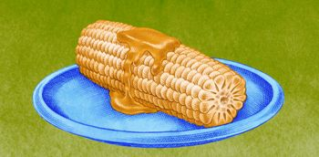

All About Growing Sweet Corn
Take the time to make mouthwatering sweet corn one of your hit crops this summer.
By Barbara Pleasant
June/July 2008
Isn’t it time to make mouthwatering sweet corn one of your hit crops this summer? Sweet corn requires warm soil (above 65 degrees Fahrenheit) so early summer is prime planting time. To stretch your harvest season, grow both early and midseason varieties.
Types to Try
- Open-pollinated varieties offer traditional corn flavor, but rapidly convert sugar to starch, so they must be picked at just the right time. They often require less fertilizer than hybrids, and seeds can be saved from year to year.
- Kernels of sugary-enhanced hybrid varieties remain sweet for a week or more, and feature tender texture combined with rich corn flavor.
- Super-sweet hybrids produce exceptionally sweet, crisp kernels good for freezing. Super-sweet varieties must be planted at least 30 feet from other types of corn to prevent cross pollination, which ruins their flavor.
- Synergistic varieties have a balance of sugary-enhanced and super-sweet kernels.
Check out our handy chart of sweet corn types and varieties, including descriptions and growing tips for each.
When to Plant
In late spring or early summer, sow seeds in warm, fertile and well-worked soil that contains plenty of nitrogen. Sow early varieties one to two weeks before main season varieties for a longer harvest season. Many gardeners sow their early sweet corn when apple trees are in full bloom.
How to Plant
Thoroughly mix in a 1-inch layer of fresh grass clippings, compost or well-rotted manure along with alfalfa meal, soybean meal or another high-nitrogen organic fertilizer (follow label directions). Sow seeds 1 inch deep and 4 inches apart, in blocks of at least three rows spaced about 24 inches apart. Thin early varieties to 8 inches apart; thin taller midseason and late varieties to 12 inches apart.
Harvesting and Storage
Once an ear feels plump and full when you squeeze it, pull back the shuck near the tip and pierce a kernel with your fingernail; it’s ready to harvest if the juice is milky.
Try to harvest corn in the morning, when the ears are cool. Refrigerate them immediately or put the corn in a cooler and layer it with ice. Sweet corn can be canned in a pressure canner, but most people prefer the speed and convenience of freezing. Blanched corn off the cob takes up much less freezer space compared to whole ears.
Saving Seeds
Most sweet corn varieties are complex hybrids, so don’t expect good results from saving and replanting the seeds. To save seeds from open-pollinated varieties, allow perfect ears to dry on the plants until the husks turn tan. Continue to dry them indoors until a few kernels fall away when you twist the ear between your hands. Store seeds in a cool, dry place for up to two years. (To find the varieties you want, use our nifty new seed search.)
Pest and Disease Prevention Tips
- Grublike gray to brown corn earworms feed on corn silks and kernels. They are larvae of moths that lay eggs in the tips of immature ears. To limit damage, use a squirt bottle to place five to six drops of vegetable oil in the tip of each new ear. For nearly worm-free harvests, add Bacillus thuringiensis (also known as Bt) organic insecticide to the oil. If earworms are minimal, simply break off the blemished tips as you shuck. Varieties with tight husk tips (such as ‘Argent’) often show only modest earworm damage.
- A fungal disease called “corn smut” causes kernels to become black, swollen and distorted. You can limit its spread by removing infected ears. Revered in Mexico as a delicacy, blobs of corn smut actually are edible, and resemble mushrooms when cooked.
- Inch-long striped army worms are common pests of late corn varieties, but early maturing varieties rarely are damaged. Tachinid flies and other beneficials kill large numbers of fall army worms, or you can use a spinosad-based pesticide. For more information, see Oregon State University’s Web page on organic controls for fall army worms.
- Raccoons closely monitor sweet corn’s progress and stage nighttime raids just as it reaches perfection. To protect nearly ripe ears, tape the ears to the stalk with packing tape, or try some of the other deterrents suggested by the Internet Center for Wildlife Damage Management.
Growing Tips
- Precede sweet corn with a cover crop of hairy vetch or another legume to boost the soil’s nitrogen supply. In warm weather, sweet corn can be sown one to two weeks after a cover crop is cut down or turned under.
- Sweet corn seed must germinate rapidly or it will rot. For best germination, soak seeds in clean water overnight before sowing in warm soil (65 degrees).
- Hybrid sweet corn is bred to grow at close spacing with heavy fertilization. To keep plants supplied with nitrogen, fertilize before planting, then side dress them with a high nitrogen fertilizer such as cottonseed or blood meal when the plants are 1 foot tall, and again when tassels appear.
- If plants are blown over by gusty summer thunderstorms, give them a few sunny days to right themselves. It won’t hurt nearly mature plants to grow crooked, but you may need to prop up young plants that don’t get back up by themselves. To prevent this problem, called “lodging,” hill up soil over the base of the plants as you hoe out weeds.
- The best way to fit sweet corn into a small garden is to grow early varieties in hills comprising six to eight plants. Corn is pollinated when wind carries pollen onto emerging strands of silk. To assure big, well-filled ears in a small planting, gather pinches of dusty pollen from corn tassels and sprinkle it onto the silks once or twice a day.
In the Kitchen
Immediately refrigerate sweet corn to preserve its flavor. You can boil, steam or grill full ears, cut off whole kernels or make creamed corn. To get kernels like those found in canned and frozen corn, blanch ears in boiling water for a few minutes, then cut off the kernels. For creamy corn kernels, cut the kernels from raw ears, and use a spoon to scrape the remaining milky juice off the cobs.
KEITH WARD
Everyone loves sweet corn - why not plant your own?
|

KEITH WARD
You can boil, steam or grill full ears, cut off whole kernels or make creamed corn.
|
|